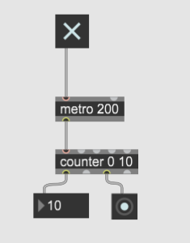
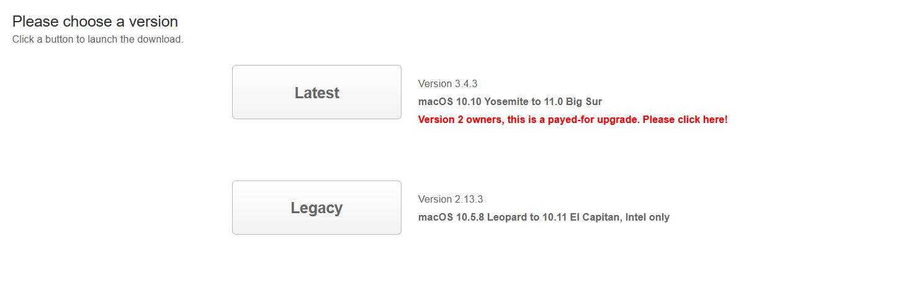
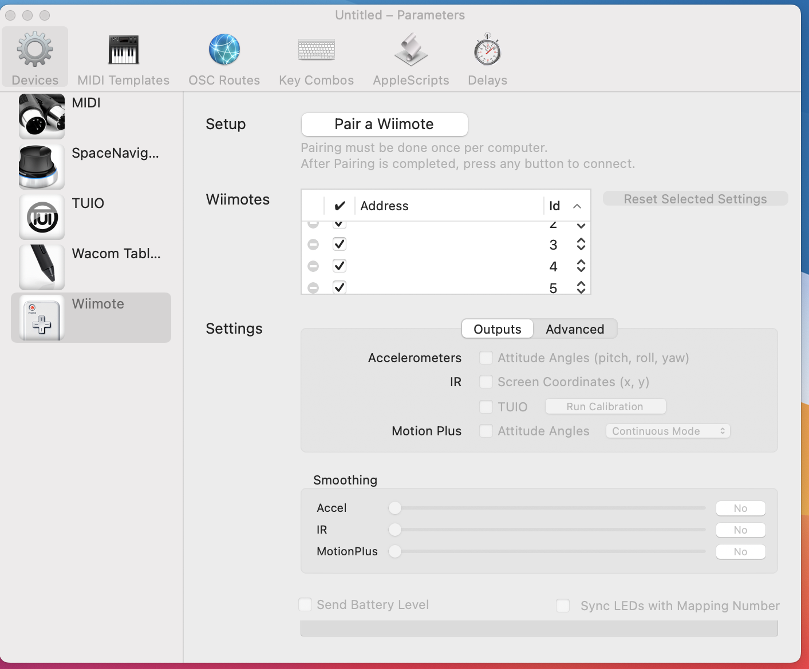
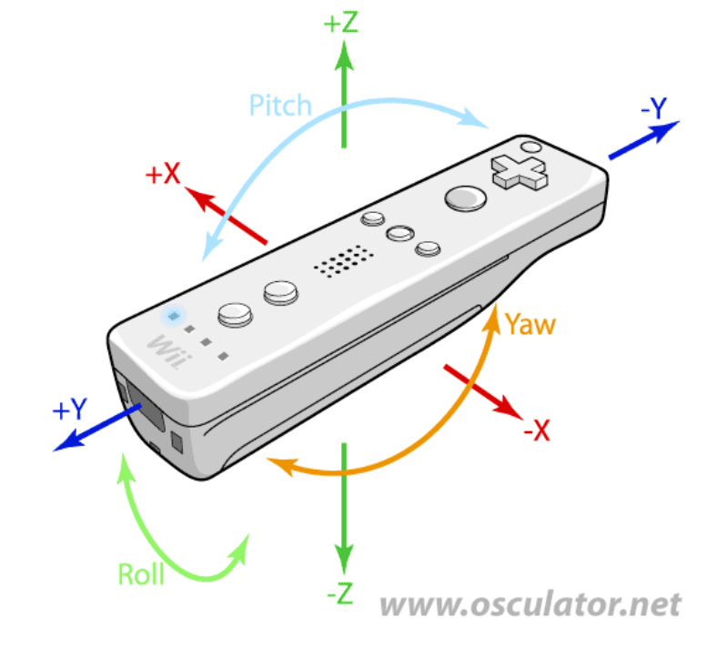
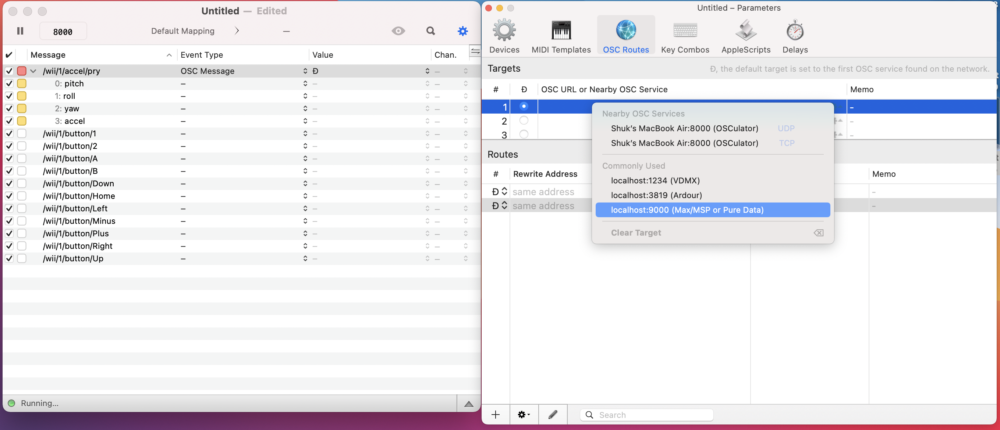
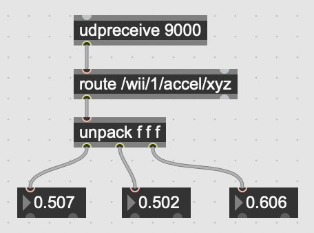
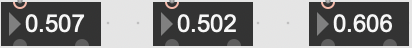
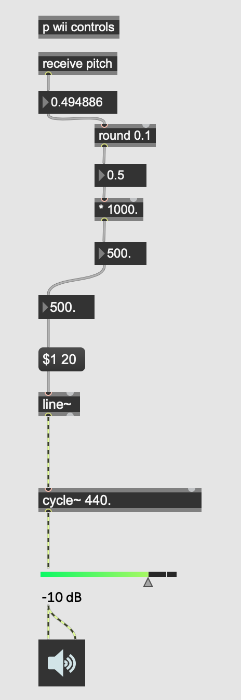

꒰ᐢ. .ᐢ꒱₊˚⊹ A site for using MAX/MSP for making music with Wiimotes! ⊹˚₊꒰ᐢ. .ᐢ꒱
By: Sonia Ng
For ENSH 401
Hello.
This site is intended to showcase and demostrate how to use Wiimotes with MAX!
I'll be going in-depth from setting up your Wiimotes, generating sounds with it, and showcasing
example works that can be used as inspirating for your own projects.
⸜(｡˃ ᵕ ˂ )⸝♡ ૮₍ ˶ᵔ ᵕ ᵔ˶ ₎ა ଘ(੭ˊᵕˋ)੭* ੈ
What is MAX?
MAX/MSP/Jitter or more commonly just known as MAX is a visual programming
language intended for creating music and multimedia projects!
MAX is not free. You get a 30 day trial period and afterwards you'll have to pay $9.99 USD/month.
The main idea when using MAX is connecting objects to one another. Objects communicate with
eachother through patch cords. The more objects your MAX patch (What MAX calls the programs you create with it) has, the more
complicated it becomes. For a more in-depth tutorial on using MAX, check out the MAX documentation site!

This is a simple counter. Notice how each object is connected in the patch.
Now there are several objects in MAX that you can interactive with. But for now, I will only
be discussing the objects that will be used for implementing the Wiimotes to MAX.
For more information on objects, you can always type Ctrl+Shift+H for help
on the object.
૮₍˶ •. •⑅₎ა♡ ૮₍•᷄ ࡇ •᷅₎ა ♡ᰔ૮₍ ˃ ⤙ ˂ ₎ა
Adding Wiimotes
⊹ ࣪ ˖ 1. Downloading Osculator ⊹ ࣪ ˖
The first step is collecting data from the Wii remotes and inputing it into MAX.
To do this you will need a secondary program called Osculator.
Osculator supports Open Sound Control (OSC) protocol(this will be important for later).

⋆ IMPORTANT TO KNOW ⋆
If you're not using macOS this will not work.
If you're running on anything newer than macOS Big Sur then this will super not work :D
Finally, if you are using bootleg Wiimotes than that will not work as well.
Osculator is technically free. However when running this program, a popup will appear asking for money every 20 minutes. This goes away if you decide to pay $23.99 USD for Osculator.
Although there are many other programs out there (and are probably free) that do the same job, Osculator is the most popular choice out there for this niche topic
and the simplest to setup.
Now that you have downloaded Osculator, make sure bluetooth is turned on! This is also why Osculator
will not work with newer versions of the macOS, due to a change of bluetooth settings on Apple's part.

Next, turn your Wiimotes on. Head to the parameters over on Osculator, under devices, click on the Wiimote section and click 'Pair a Wiimote'.
At this point, you will want to hold both the A and B buttons on your Wiimote to connect. If this doesn't work, try pressing
the sync button on the back of the Wiimote.
If all went well, you should see your Wiimote show up on the table.
Osculator gives you 8 slots. So if you had more wiimotes, you can just repeat the previous steps to connect them all.

The diagram above showcases the different angles/movements that are registered with Osculator. All this will be translated into data as output
from Osculator which you can then route to MAX.
By default, Osculator will give you the pitch, roll, and yaw. If you want the additional x,y, and z data, you can check the the box off titled
Accelerometers under the Advanced section in parameters.
Buttons on the Wiimote can also be taken in as data from Osculator and be routed to MAX as well! Press on the buttons on the Wiimote, this should
populate the main table with new messages.

For each message you have, make sure the 'Event Type' table is marked to be OSC Message.
For the 'Value' column, click on New... then click on the gear symbol and change your localhost to the one for Max/MSP.
Rememebr the number assigned to this localhost, you will need it for later.
When your done, make sure to save this so you don't have to run through this whole process everytime you connect your wiimotes.
Sometimes reading a tutorial is hard to follow. For those who want a video version of setting up Osculator, please see the
References and Useful Resources section.
⊹ ࣪ ˖ 3. Wii to MAX ⊹ ࣪ ˖

You want to be able to recieve OSC messages from Osculator to MAX.
Create an object called udpreceive.
For udpreceive to work, it needs to connect to a port to listen to.
The port you enter for udpreceive must be the same OSC Input Port given in Osculator.
Next create another object starting with route/ followed by the message on the osculator for what you want to be received by MAX.
Make another object called unpack followed by f. The number of f's correlate to the amount of data recieved from that message

(i.e for route/wii/1/accel/xyz you'll need unpack f f f f for x, y, and z data)
Now create a number object(I reccomened using float for more precision) and connect it to each output of the unpack.
Now try interacting with your Wiimote. If set up correctly you should notice the numbers changing :D
( ˊᵕˋ )♡.°⑅˙˚ଘo( ❛ั ᵕ ❛ั )੭່˙
Example Max Patches
As mentioned before, MAX IS NOT FREE. If you finish the trial and still don't pay for MAX,
you are not allowed to save your work
(which is why instead of sharing download links to my max patches, I'm sharing screenshots...).
This MAX patch showcases all of the routing possible for the buttons/movements available to be tracked on Osculator.
The send and recieve objects act as substitutes for patch chords. I mostly use them them for a cleaner view of my MAX patches.
If you had more than one Wiimote, then for each Wiimote, copy the above and change the number from 1 to the corresponding Wiimote.

p wii controls contains the patch in the previous photo. The p object allows you to create a MAX patch within a patch,
usually helpful when your projects become quite large. This patch demostrates using a simple oscillator with the yaw outputs from Osculator.
Video demostration of the patch:
(´｡• ᵕ •｡`)( ੭ ･ᴗ･ )੭
References and Useful Resources
Video showing how to setup Osculator. It is quite old but the actions are still the same as the current versions of MAX and Osculator.
An example of someone using the Wiimotes with Osculator in MAX.
(if you scroll down to the comments, he links to where you can copy his MAX patch and test
it for yourself)
Me performing with Wiimotes for my final project in MUS407. I utilized two Wiimotes with MAX's BEAP synthesizer.
The Wiimmotes controlled mainly amplitude and frequencies. Buttons were used to change between filters and effects.